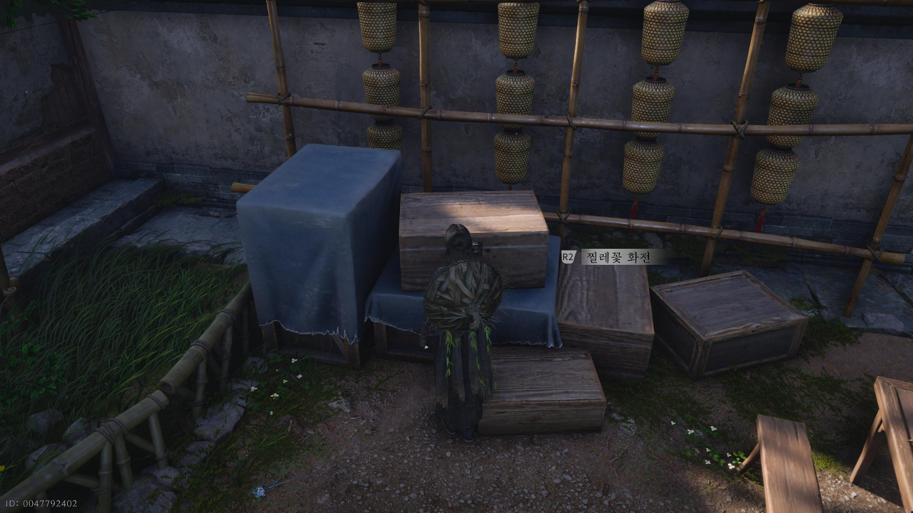
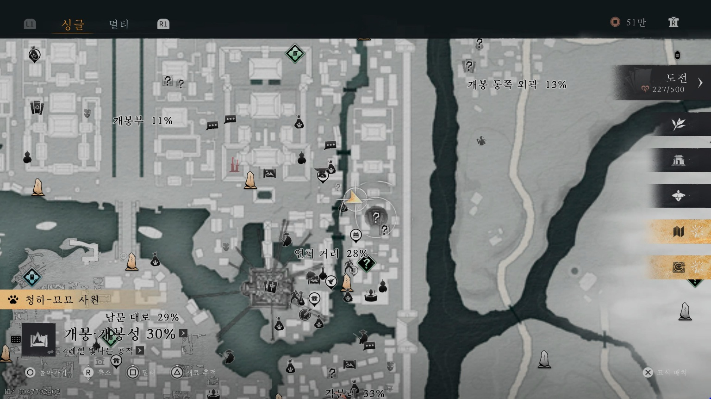
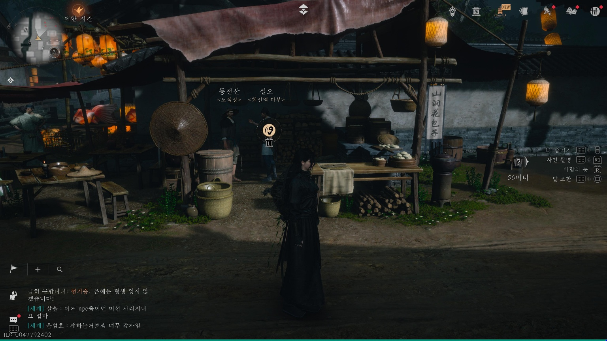
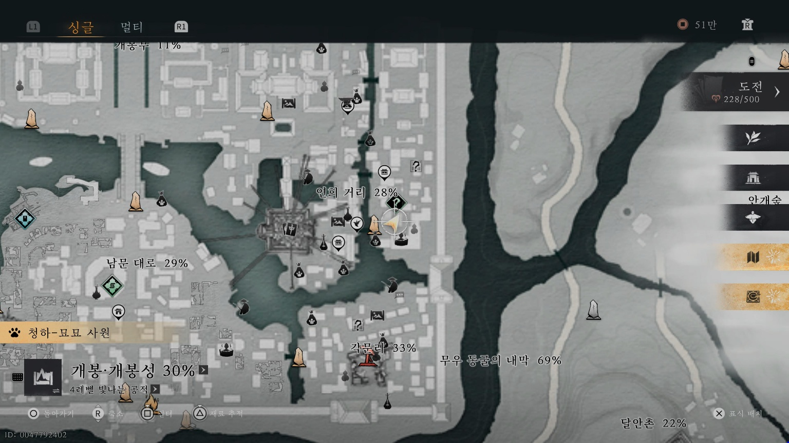
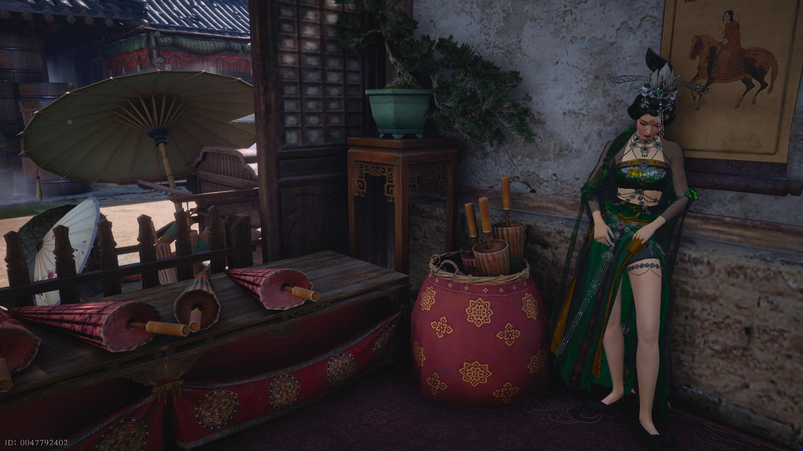

만사록
아름다운 이
구류문 제자들의 은밀한 귓속말
📜 퀘스트 개요
떨어진 화전을 줍고, 구류문 제자들의 대화를 엿들은 뒤 주인을 찾아주는 의뢰입니다.
1. 찔레꽃 화전 습득
아래 지도에 표시된 장소로 이동하세요.
바닥에 떨어져 있는 [찔레꽃 화전]을 발견할 수 있습니다. 이를 주워주세요.


2. 대화 엿듣기
화전을 얻은 후 아래 장소로 이동하세요.
등천산과 설오가 나누는 대화를 엿듣기 해야 합니다.


3. 주인에게 전달
연희 거리 경계석으로 돌아오세요.
바로 앞에 있는 건물 안으로 들어가면 취화음 제자 화지청이 있습니다.
그녀에게 화전을 돌려주면 됩니다.


화전을 주인에게 돌려주면
퀘스트는 완료됩니다.